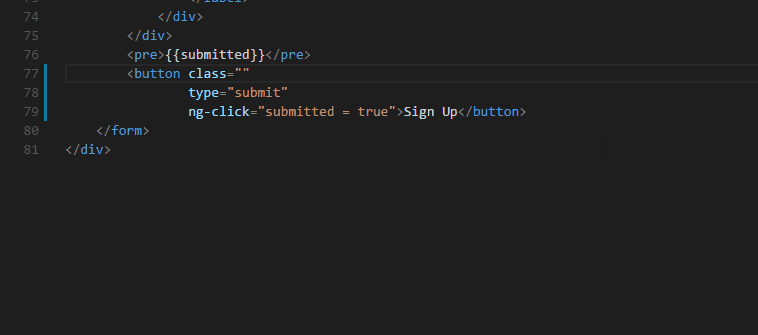

Great tooling can help developers write faster, cleaner, and more consistent code. Visual Studio Code extensions allow
you to add tools, languages, debuggers, and more, to help you do just that. A while back, I asked front end developers
here at Shopify what extensions, packages, and plugins they couldn't live without.
Based on those conversations, I wrote two articles about the best Sublime Text plugins and the best Atom packages for
front end developers. In this article, I've highlighted my top picks for Visual Studio Code (VS Code) extensions, and
broken them down into the following six categories. If you want to ensure that what you're building is secure, you can
also check out our article on how to improve your client's website security.
1. IntelliSense for CSS class names
The IntelliSense for CSS class names extension helps to autocomplete class names for the HTML class attribute by looking
at the CSS class definitions in your workspace, and external files referenced through the link element.

2. CSS Peek
CSS Peak extends HTML and Embedded JavaScript templates with Go To Definition support for CSS classes and IDs found in
your markup.